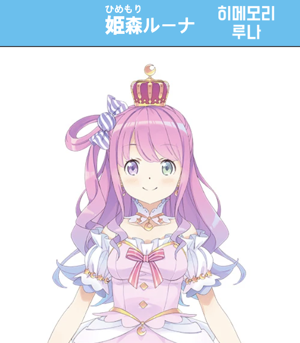
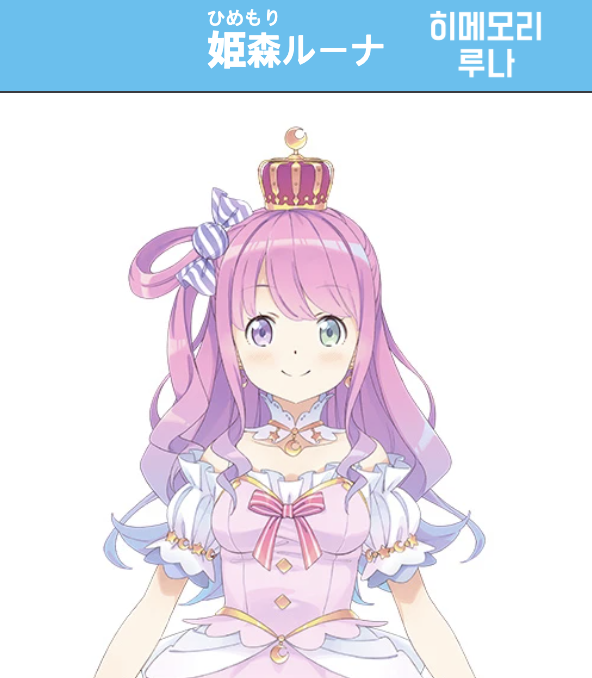

홀로라이브 0기생은 홀로라이브에서 1기생보다 앞서 데뷔한 멤버들이라는 의미가 아니라, 어떤 이유에서든 동기가 없이 혼자 홀로라이브에 합류해서 기수제로 구분되지 않는 멤버들을 묶어 부르는 표현이다.
로보코의 설명 처음부터 만들어진 말이 아니라 시간이 흐르면서 점차 사용된 용어이기 때문에 0기생이라는 이름을 정하는 과정에 관한 에피소드도 많다.
미코와 스이세이는 다른 멤버들이 자신을 '홀로라이브 n기 소속'으로 소개하는 것이 내심 부러워 자신들도 예전부터 무언가 유닛명을 만들고 싶었다고 말했고, 소라는 이 멤버들과 함께 활동을 해보고 싶어 0기생을 만들게 되었다고 밝히기도 했다.
경력으로는 토키노 소라, 로보코, 호시마치 스이세이가 1기생보다 길다. 같은 0기생이라고 해도 멤버들 사이에 데뷔일이 크게 차이가 나고, 토키노 소라와 로보코 씨는 hololive가 방송 송출용 앱이 아닌 자체 캐릭터 라이브 시청 앱이었을 당시에도 hololive 소속이었던 고참이지만 사쿠라 미코와 호시마치 스이세이는 홀로라이브 멤버가 되기 전부터 버츄얼 유튜버로 활동한 기간도 있기 때문에 멤버들의 배경도 제각각이다.
호시마치 스이세이는 유튜버로 활동한 기간은 로보코와 비슷할 정도로 오래 되었지만 정식으로 홀로라이브 멤버가 된 것은 2기생보다 늦기 때문에 미나토 아쿠아와 누가 선배인지를 두고 짧은 상황극을 보여주기도 했고, 사쿠라 미코 역시 스이세이와 비슷하게 홀로라이브 2기생들보다 약 1주일 정도 앞서 유튜브 활동을 시작했지만 홀로라이브 멤버로 합류한 것은 상대적으로 늦어서 처음에는 2기생들을 선배로 대하기도 했다.
다만 홀로라이브 JP는 3기생 이후부터 증원할 때 기수마다 기간을 길게 잡고 계획적으로 하고 있으므로, 0기생들은 필연적으로 그 이전의 초창기에 영입된 멤버들이 많아 선배 이미지가 강하다.
0기생들이 경력 기수 다 떠나서 다른 멤버들에게 존경받고 추앙받아도 어색해 보이지 않는 이유는 그들 하나하나가 이미 선배다운 모습을 보여 왔기 때문일 것이다. 당장 업계 전체로 봐도 최고서열인 토키노 소라는 말할 것도 없고, 못지않게 이른 시기에 방송을 시작하며 묵묵히 홀로라이브의 기틀을 닦은 왕언니 로보코 씨, 그리고 팔방미인임에도 오랫동안 자신을 드러낼 기회를 얻지 못했던 호시마치 스이세이, 마찬가지로 별개의 프로젝트 하에서 한동안 빛을 보지 못한 채로 외면당했던 사쿠라 미코, 노래에만 전념하느라 큰 인기를 끌지 못하면서도 '개척자'라는 자신의 팬덤 이름에 부응하면서 끝까지 인내한 AZKi까지, 어느 한 명도 방송인으로서 쉬운 여정을 거쳐온 멤버가 없다.
그래서 이들은 인기가 많고 적고를 떠나서 "그때 버텨내 주어서 참 고맙다"는 감사를 후배들과 팬덤에게 받고 있다. 어떤 해외 팬은 0기생을 끝내 포기하지 않았던 기수로 정의해서 많은 사람들의 공감을 받기도 했다.
홀로라이브 공식 홈페이지에서는 정식으로 홀로라이브에 들어온 날짜를 기준으로 멤버들을 정렬하고 있기 때문에 사쿠라 미코는 2기생과 오오카미 미오 다음 순서에, 호시마치 스이세이는 네코마타 오카유와 이누가미 코로네가 추가로 데뷔한 이후 순서에 위치하고 있다.
2022년 4월 1일을 기점으로 AZKi가 정식으로 홀로라이브에 소속하기로 결정돼 0기생으로 분류되었다.
2018년 5월 2일부터 동년 5월 13일까지의 오디션(기사)을 통해 모집된 멤버. 2018년 5월 13일에 요조라 멜이 데뷔하고, 동년 6월 1일에 나머지 4명이 데뷔하였다. 캐릭터 디자인은 공모전을 통해 선정하였으며, 각 멤버 트위터 프로필에는 디자인한 일러스트레이터의 닉네임이 추가되어 있다.
원래 총 6명이 1기생으로 활동을 할 예정이었지만, 히토미 크리스(人見クリス)가 과거 행적 때문에 제명되어 5명이 되었다.
1기생들이 데뷔할 시점엔 회사의 운영 방침도 거의 정해진 것이 없는 불안정한 상태였기 때문에 홀로라이브 멤버라는 정체성도 굉장히 옅었고, 각자 방송인으로서 살아남는 것만으로도 벅찬 시기를 보낸 멤버들이다.
아키 로젠탈은 홀로라이브에 들어온 이후로 "앞으로 버츄얼 유튜버로서 방송 열심히 하세요. 이상!" 정도의 말만 전해 들은 이후로 회사측과 거의 연락을 주고받을 일이 없어 홀로라이브라는 그룹이 실체가 없는 것처럼 느껴지기도 했다고 회상했다.
또한 나츠이로 마츠리가 타카나시 키아라의 홀로토크에 출연하여 말한 바로, 초기 홀로라이브는 다른 그룹들에 비해 인기가 많지 않았기 때문에 어떻게든 사람들의 이목을 끌기 위해 과격한 방송을 하거나 유난히 섹드립을 치기도 했다고 한다.
2021년 5월 28일에 1기생 3주년 기념 합동 라이브 공연을 열었다. 이 방송에서 마츠리가 랩을 하는 모습이 호평을 받았다.
비슷한 시각, 굿스마일 컴퍼니 미국 공식 트위터 계정에서 나츠이로 마츠리, 시라카미 후부키, 아카이 하아토의 넨도로이드 제작을 알리고 선주문을 받기 시작했다. 마츠리의 트레이드마크라 할 수 있는 그 표정(…)도 포함되어 있다. 그 외에도 맥스 팩토리에서도 여러 멤버들의 넨도로이드나 피그마 상품들을 준비중이다.
2018년 8월 8일 미나토 아쿠아를 시작으로 활동을 개시한 멤버들로, 총 5명이다. 멜을 제외하고 동년 6월 1일에 데뷔한 1기생들과는 경력 차이가 2개월로 그리 크지 않다. 캐릭터 디자인은 공모전을 통해 선정하였으며, 각 멤버 트위터 프로필에는 디자인한 일러스트레이터의 닉네임이 추가되어 있다.
이때부터 메이드, 마법사, 오니, 서큐버스 등 캐릭터성에 서브컬처 롤플레이 속성이 본격적으로 추가되면서, '이세계적인 느낌이지만 어쨌든 우리는 여고생'의 일변도였던 1기생들과 차이를 보이기 시작했다.
유일하게 스바루는 이런 롤플레이 속성이 없는 편.
각 멤버들이 마이페이스 기질이 있는, 흔히 말해 길고양이 같은 스타일인지라 동기끼리 뭉쳐서 활동하는 모습이 흔치 않은 기수이기도 하다.
그나마 동기들의 경조사를 챙기는 초코와 사람 안 가리고 친근하게 대하는 스바루 정도가 예외이고, 아쿠아와 시온은 홀로라이브 최초의 동기 간 커플링으로서 마치 같은 책상에 앉아 투닥거리는 짝꿍 같은 모습을 보여주는 케미다.
하지만 스바루를 제외하면 인간관계에서 먼저 나서서 다가가는 멤버들이 별로 없고, 그나마 그 스바루는 멤버들끼리 뭉쳐야 할 때에는 2기생 외에도 선택지가 많으며 특히 'SMOK' 유닛으로 게이머즈나 혹은 'FAMS' 유닛으로 많이 엮인다.
유즈키 초코는 2기생이 잘 모이진 않지만 마음을 맞추면 얼마든지 모일 수 있다고 얘기했다. 그리고 이런 분위기가 마치 좋은 의미에서 가족같다고 평가하기도 했는데 1년에 한번 모일까말까한 2기생이지만 그런 분위기가 강제적인 분위기를 만들지 않고 자유롭게 있을 수 있어서 편안하다고.
그렇다고 서로 맞춰지지 않는 것도 아니고 스위치가 들어가면 호흡이 척척 맞춰져서 아무도 얘기하지 않더라도 한 장소에 다들 모이게 된다고 한다.
홀로라이브에 들어온 경위에 대해 이야기하던 시온의 말에 의하면 2기생은 거의 스카우트로 들어온게 아닐까? 라며 이야기했는데 유즈키 초코는 홀로토크에서 스카우트로 들어왔다고 언급했고, 미나토 아쿠아와 오오조라 스바루가 오디션을 보고 들어왔다고 스스로 언급한 걸 보면 나키리 아야메는 스카우트로 들어온 것으로 추정된다.
유즈키 초코의 말에 의하면 2기생의 경우는 데뷰하기 전까지 서로에 대해서 전혀 아는게 없었다고 하며, 데뷔 전, 미리 만나서 동기끼리 합을 맞춰보기 시작한 것도 3기생 이후부터라고 한다. 미나토 아쿠아나 오오조라 스바루 등에 의하면 오프라인으로 기념일이 있으면 연락도 하고 필요하면 만나기도 하는데, 정작 2기생 단체 디스코드나 라인 그룹은 없었다고 한다.
게임 플레이를 중심으로 활동하는 유닛. 오오카미 미오가 홀로라이브에 들어올 때 만들어져 2018년 12월 6일부터 활동을 시작했다. 미오가 홀로라이브 오디션을 통과했을 당시 미오를 2기생으로 데뷔시기키엔 날짜가 다소 늦어 일정을 맞추기 어려웠고, 미오를 마지막으로 한동안 새로운 멤버를 뽑을 계획도 없었기 때문에 이미 게임 플레이 위주로 활동을 하고 있었던 시라카미 후부키와 팀을 꾸린 것이 게이머즈의 시작이다.
미오는 자신이 오디션을 봤을 때 "게임을 좋아한다"고 말한 것을 들은 YAGOO가 '미오는 게임을 굉장히 잘하는 사람'인 것으로 착각한 것이 계기가 되어 게이머즈가 만들어진 것이라고 표현했다.
이렇게 다소 급조된 팀이었다보니 미오가 데뷔하고 반년 가까이가 지난 2019년 4월이 되어서야 네코마타 오카유와 이누가미 코로네가 합류했고, 후부키와 미오가 홀로라이브 초기 멤버로 인식되는 반면 오카유와 코로네는 홀로라이브가 초창기에서 전성기로 넘어가는 과도기에 합류한 멤버이기 때문에 서로를 유일한 동기로 여긴다.
초창기 홀로라이브는 시라카미 후부키와 미나토 아쿠아를 제외하면 방송 중에 게임을 플레이하는 멤버가 거의 없었기 때문에 게이머즈 멤버들은 게임 실력이 뛰어난 멤버가 아니라 '게임 플레이 방송을 주력으로 활동하는 멤버'들이었다.
후부키를 제외하면 게임을 경쟁적으로 플레이하기보단 느긋하게 즐기는 것을 선호하는 편이기 때문에 시청자들이 일반적으로 떠올리는 '게이머'의 이미지와는 다소 차이가 나며, 기존 홀로라이브 멤버들의 방송에서 점점 게임 방송의 비중이 늘어나고, 페코라, 토와, 보탄 등 게임 실력이 뛰어난 멤버들이 속속 홀로라이브에 합류하게 되면서 일반 기수들과 큰 차이는 나지 않게 되었다.
넷 모두 식육목 생물이고, 그 중에서도 오카유를 제외하면 모두 갯과 생물이다.
또한 멤버들이 모두 시라카미 후부키의 현실 친구들이라는 특징을 가지고 있는데, 오오카미 미오는 후부키의 고등학교 동창이긴 해도 정식으로 오디션을 통과해 홀로라이브에 들어왔지만, 다른 두 사람은 후부키가 스카우트했다.
네코마타 오카유는 오후에 면접을 본 뒤 당일 오후 6시에 합격이 결정될 정도로 형식상으로만 가볍게 면접을 봤고, 이누가미 코로네는 아예 면접도 보지 않고 오카유를 따라 들어오게 되었다.
2기와 3기 사이다보니 2.5기라고 불리기도 한다.
2022년2월24일, 우루하 루시아 졸업
"판타지 세계에서 찾아온 VTuber(ファンタジーの世界からやって来たVTuber)"라는 컨셉으로 2019년 7~8월부터 활동을 시작한 멤버들이다. 우사다 페코라와 우루하 루시아는 다른 멤버들에 비해 일찍 데뷔가 결정되어 7월 중순에 데뷔했고, 시라누이 후레아, 시로가네 노엘, 호쇼 마린 3명은 2019년 6월 13일부터 23일까지 공개적으로 열린 오디션을 통해 선발되어 8월 초에 데뷔했다.
상시 모집이 아니라 오디션 스케줄을 구체적으로 정해두고 멤버를 선발한 것은 지금까지 이 3명 뿐이다.
홀로라이브에서 처음으로 기수 체제와 유닛 체제가 일원화되었다는 의의가 있다.
3기생을 시작으로 데뷔 전에 서로 친목을 다질 시간을 제공하기 시작했고 한 달 간 선배와 콜라보 금지를 걸어 해당 기수만의 개성을 찾을 수 있도록 했으며 해당 기수를 칭하는 호칭이 붙기 시작했다.
그래서 1기생과 2기생은 크게 구분 없이 섞여 활동한 데에 비해 3기생 이후로는 좀 더 기수를 강조하는 활동이 늘어났다.
홀로라이브 콜라보 관계도에서 동기간의 케미가 본격적으로 부각되기 시작한 기수이기도 하다.
0기생들이야 원래 동기 사이가 아니었고, 1기생들 역시 2D 버튜버로서 생존에 골몰하다 보니 각자도생 분위기가 없잖아 있었으며, 2기생과 게이머즈까지도 SMOK 등으로만 엮일 뿐 동기애 자체는 신통치 않았지만, 3기생에 들어서면서 비로소 선배들이 피땀 흘려 깔아놓은 버튜버 업계의 판 위에서 케미를 드러낼 수 있게 된 듯하다.
동기 간의 분위기는 3기생 이후로 계속 깊어져서, 4기생과 홀로 ID에서는 서로 허물없는 절친한 우정을, 다시 5기생과 홀로 EN에서는 심지어 가족처럼 서로를 아끼는 깊은 유대감을 보여준다.
 
키류 코코 졸업

키류 코코 졸업
2019년 12월 말부터 활동을 개시하였다. 본인들의 3D 모델링이 나오기 좀 전부터 4번째라는 의미로 홀로포스(holoForce; holo4th)라고 불리고 있다.
키류 코코가 2021년 7월 1일 졸업하게 되면서 홀로라이브 최초로 1년 넘게 활동하고 졸업한 맴버를 배출한 기수가 되었으며, 졸업 준비과정에서 맴버들이 서로를 진심으로 위하는 우정어린 모습을 보여주어 긍정적인 평가를 받았다.